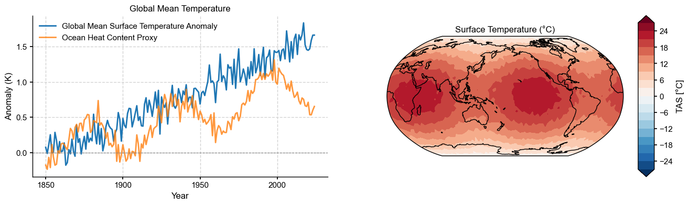
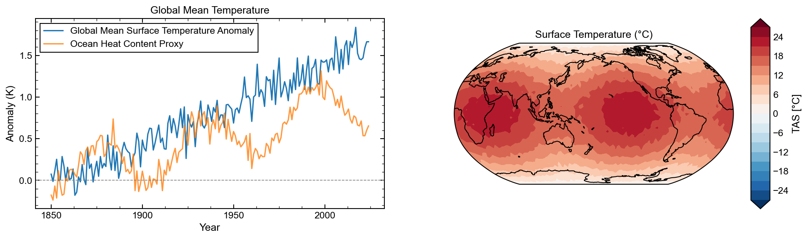
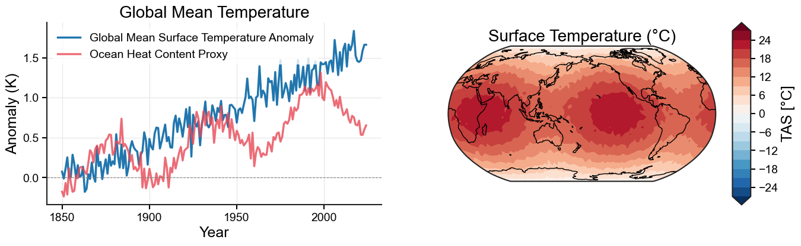
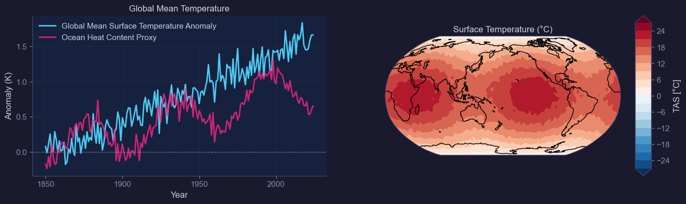
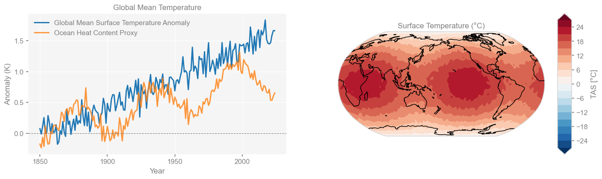
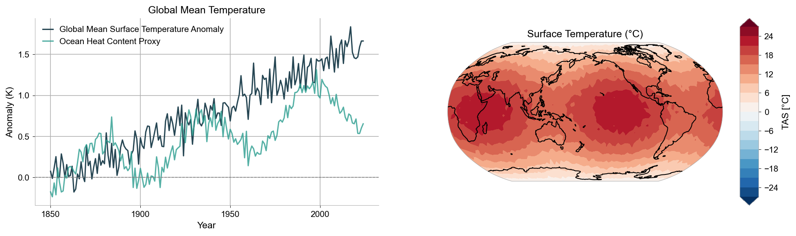
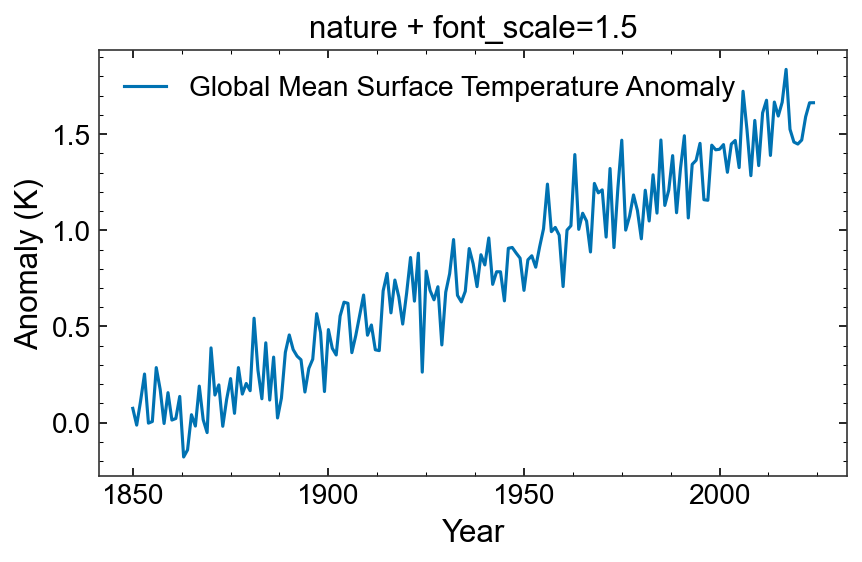

Visualization Styles#
This notebook demonstrates all available styles in x4c.visual.set_style().
Each style is shown with two common geoscience plot types:
A time series (e.g., global mean temperature anomaly)
A filled contour / spatial-like plot (using synthetic data)
[1]:
import numpy as np
import xarray as xr
import matplotlib.pyplot as plt
import x4c
[2]:
# --- synthetic data as xr.DataArray ---
np.random.seed(42)
# time series: fake GMST anomaly with trend + variability
years = np.arange(1850, 2025)
time = xr.date_range('1850-01', periods=len(years), freq='YS', calendar='standard', use_cftime=True)
trend = 0.008 * (years - 1850) + 0.0001 * (years - 1850)**1.5
noise = 0.15 * np.random.randn(len(years))
gmst = xr.DataArray(
trend + noise,
dims='time', coords={'time': time},
name='GMST', attrs={'long_name': 'Global Mean Surface Temperature Anomaly', 'units': 'K'},
)
ohc = xr.DataArray(
0.6 * trend + 0.1 * np.random.randn(len(years)) + 0.3 * np.sin(2 * np.pi * years / 60),
dims='time', coords={'time': time},
name='OHC', attrs={'long_name': 'Ocean Heat Content Proxy', 'units': 'K'},
)
# 2-D field: synthetic SST
lon = np.linspace(0, 360, 90)
lat = np.linspace(-90, 90, 45)
LON, LAT = np.meshgrid(lon, lat)
tas_data = (20 * np.cos(np.radians(LAT))
+ 3 * np.sin(np.radians(2 * LON)) * np.cos(np.radians(LAT))
+ np.random.randn(*LAT.shape) * 0.5)
tas = xr.DataArray(
tas_data,
dims=('lat', 'lon'), coords={'lat': lat, 'lon': lon},
name='TAS', attrs={'long_name': 'Surface Temperature', 'units': '°C'},
)
[3]:
def demo_plots(style_name):
"""Draw a time-series panel and a contour panel for the given style."""
x4c.visual.set_style(style_name)
fig, ax = x4c.visual.subplots(
1, 2, ax_loc={'ts': (0, 0), 'map': (0, 1)},
projs={'map': 'Robinson'},
projs_kws={'map': {'central_longitude': 180}},
figsize=(16, 4),
)
# -- time series --
gmst.x.plot(ax=ax['ts'], label=gmst.attrs['long_name'])
ohc.x.plot(ax=ax['ts'], label=ohc.attrs['long_name'], alpha=0.8)
ax['ts'].axhline(0, color='grey', lw=0.8, ls='--')
ax['ts'].set_xlabel('Year')
ax['ts'].set_ylabel(f'Anomaly ({gmst.attrs["units"]})')
ax['ts'].set_title('Global Mean Temperature')
ax['ts'].legend()
# -- contour --
tas.x.plot(ax=ax['map'], levels=20, cmap='RdBu_r')
ax['map'].set_title(f'{tas.attrs["long_name"]} ({tas.attrs["units"]})')
x4c.showfig(fig)
journal (default)#
Clean style for manuscript figures — Arial font, L-frame spines, dashed grid.
[4]:
demo_plots('journal')

nature#
[5]:
demo_plots('nature')
agu#
_grid to enable it.[6]:
demo_plots('agu')

[7]:
# with grid enabled
demo_plots('agu_grid')
presentation#
Bold, high-contrast style for talks and posters — larger fonts, thicker lines, vibrant palette.
[8]:
demo_plots('presentation')

dark#
Modern dark theme for screen display and dashboards — dark navy background, neon-inspired palette.
[9]:
demo_plots('dark')

minimal#
Ultra-clean style with thin lines, earth-tone palette, and minimal visual clutter.
[10]:
demo_plots('minimal')
web#
Web / ggplot-like style — grey text, light background, no spines.
[11]:
demo_plots('web')

Modifiers: _spines, _nospines, _grid, _nogrid#
Any style can be combined with modifiers by appending them to the style name.
[12]:
demo_plots('nature_nospines')
[13]:
demo_plots('minimal_grid')

font_scale#
All styles accept a font_scale parameter to uniformly scale font sizes.
[14]:
x4c.visual.set_style('nature', font_scale=1.5)
fig, ax = plt.subplots(figsize=(6, 4))
gmst.plot(ax=ax, label=gmst.attrs['long_name'])
ax.set_xlabel('Year')
ax.set_ylabel(f'Anomaly ({gmst.attrs["units"]})')
ax.set_title('nature + font_scale=1.5')
ax.legend()
fig.tight_layout()
plt.show()

[15]:
# reset to default
x4c.visual.set_style('journal')